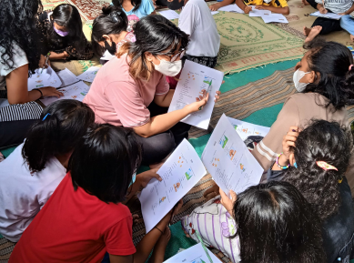
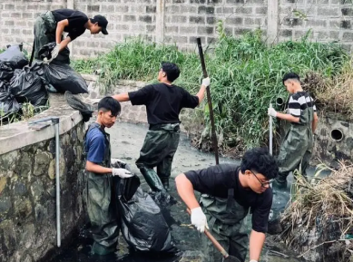
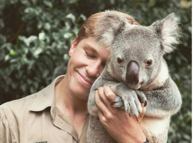
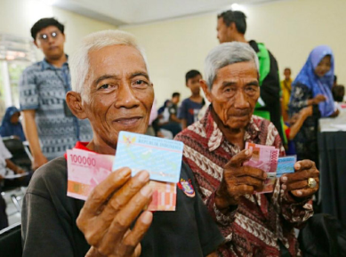
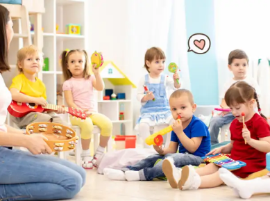
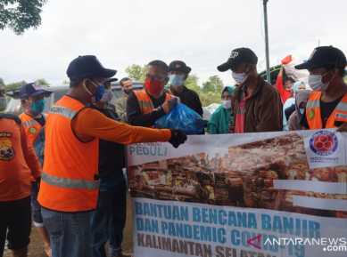

LAPORAN PROYEK
Bersama, kita lebih kuat. Di sini, kami memberikan transparansi proyek yang telah dijalankan, termasuk program yang berdampak pada berbagai aspek kehidupan masyarakat. Setiap proyek bertujuan untuk membawa perubahan positif dan memperkuat kesejahteraan komunitas.





